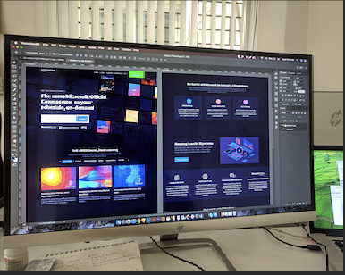

My Project
Responsive Website
A responsive website is one that adapts to the size and shape of the device on which it is displayed, including mobile and desktop browsers. Today's never-ending influx of new devices (laptops, smartphones, and tablets) underscores the critical nature of website responsiveness. As a result, I've created a multi-page responsive website as a test of my IT skills.
Web scraping
Web scraping is a technique for extracting vast amounts of information from websites and storing it in a specific area (a local file in your computer or a database in a table). To do anything in data science, you must have access to data. To obtain that data, you'll need to conduct research on the appropriate sources, which web scraping facilitates. Web scraping gathers and categorizes all necessary data in a single, easily accessible area. Conducting research in a single, handy area is far more possible and comfortable than searching for each item individually. I choose to analyze competitors for this project. To begin, I've chosen to analyze automobile manufacturers. Following that, I must choose a brand for which I will conduct a competitive analysis. After selecting a brand, I conduct a competition analysis; I crawl the web for competitors, determining what they sell and how they target their customers.
Network traffic analysis
Network traffic analysis, sometimes referred to as packet sniffing, is a well-known subject in the field of internet security. This is an analytical project in which I will learn how to utilize packet sniffer software to monitor and record data packets flowing across a computer network, such as the network at my company, training facility, or institution. Packet sniffing is critical for cybersecurity since cybercriminals target data packets in order to steal information such as passwords, credit card numbers, and so on.